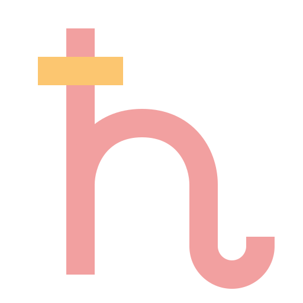

一宮：自我完成宮
（在此撰寫一宮整體解釋，例如：掌管自我認同與人生方向，是命盤的起點與核心……）
太陽 SUN
（太陽在一宮時……）

月亮 MOON
（月亮在一宮時，內在情感與安全感需求強烈，容易直接表露心情……）

水星 MERCURY
（水星在一宮時，思考與溝通風格直接且有條理，善於自我表達……）

金星 VENUS
（金星在一宮時，價值觀與喜好鮮明，對美感與和諧有強烈追求……）

火星 MARS
（火星在一宮時，行動力與衝勁十足，勇於追求目標且富有競爭精神……）

木星 JUPITER
（木星在一宮時，帶來樂觀與擴張機會，人生格局較易開闊，喜歡冒險……）

土星 SATURN
（土星在一宮時，考驗與責任感顯現，需學習自律與耐心，累積實力……）

天王星 URANUS
（天王星在一宮時，創新與獨立性爆發，喜歡打破常規，追求自由……）

海王星 NEPTUNE
（海王星在一宮時，靈感與直覺敏銳，具藝術天賦，但需小心迷失自我……）

冥王星 PLUTO
（冥王星在一宮時，深層轉化與重生課題顯現，個人力量足以自我革新……）